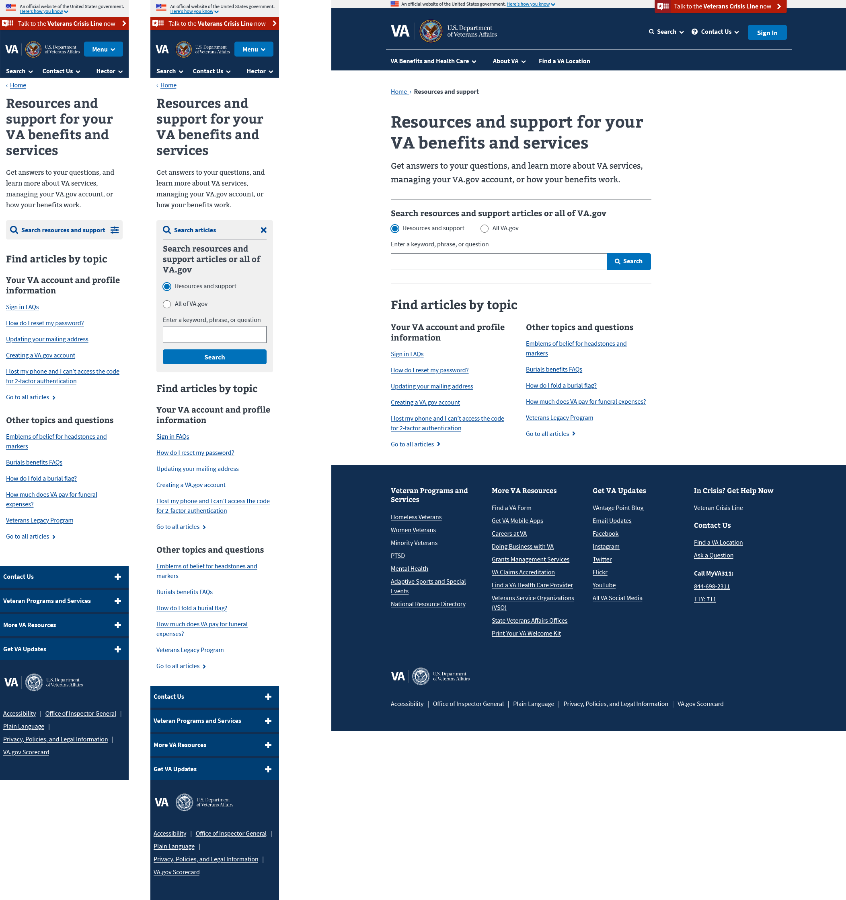

VA Resources and Support
The problem
Given the digital moderization goals at VA, and because VA has so much content available, we prioritized the content into tiers, focusing on Veterans first. Tier 1 content is benefit content and tools (applying for benefits, accessing benefit tools to manage your existing benefits) for beneficiaries (Veterans, family members, service members). Tier 2 content is benefit-adjacent content (for beneficiaries, and people who work with beneficiaries). Tier 3 content is organizational/administrative/office content. How do we ensure that helpful, relevant tier 2 information that supports tier 1 benefit content is accessible and findable in the new VA.gov site experience, AND does not dilute, distract, and clutter Veterans' benefit product UX?
The solution
Develop a Drupal-based content management system called Resources and Support that enables VA to easily migrate or rewrite content but also serve as a knowledge base for Veterans and others to access relevant content and connect them to appropriate benefit services and tools.
My role
I worked with expert content strategists and product owners to develop various design templates (e.g. a FAQ page, a Questions and Answers page, etc) that works with the VA design system. These templates were designed from scratch, using previous VA websites as samples. We worked together to provide documentation on how they are built, how they should be used (including guidance in the Drupal authoring experience), and how they will improve usability.
View a mural board of all of the templates.
Mobile and desktop design for the landing page
Mobile and desktop design for the step-by-step template